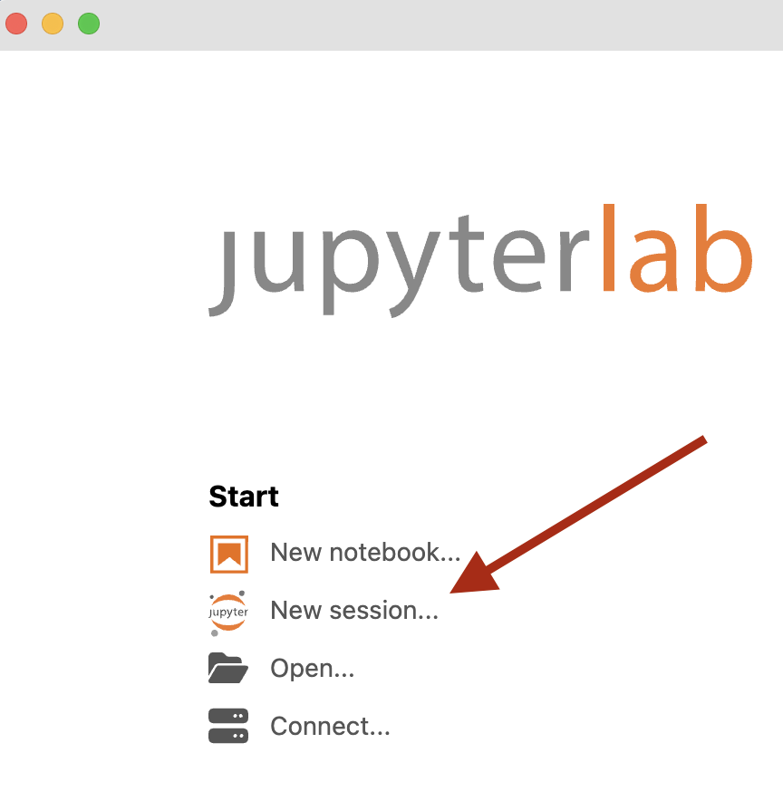
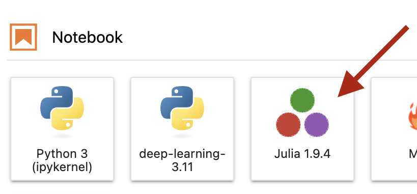

The Julia programming language is open source (and hence free) scientific computing software. You can think of it as a modern kind of MATLAB.
Jupyter notebooks (named for the languages Julia, Python and R) are a convenient way to collect and present a computation. You can intersperse your code and output with rich Markdown comments.
Installation
-
JupyterLab Desktop is a convenient application for viewing and authoring Jupyter notebooks. Follow the installation instructions to put a copy on your computer.
-
Install Julia from an official binary. Advanced users may prefer to use a command line installer instead. Take your pick.
-
Before you can start using Julia with the friendly Jupyter notebook interface, you need to run a short command in Julia itself to activate its Jupyter capabilities. Launch the Julia application, which will start a command line interface like this:
_ _ _ _(_)_ | Documentation: https://docs.julialang.org (_) | (_) (_) | _ _ _| |_ __ _ | Type "?" for help, "]?" for Pkg help. | | | | | | |/ _` | | | | |_| | | | (_| | | Version 1.9.4 (2023-11-14) _/ |\__'_|_|_|\__'_| | Official https://julialang.org/ release |__/ | julia>At the command line, enter the following single line.
import Pkg; Pkg.add("IJulia")Julia will then download, compile, and install the packages needed to interface with Jupyter notebooks. This can take a bit of time; go get a coffee.
-
You can now launch the JupyterLab Desktop application and create a new notebook using the Julia kernel.
 
Packages
The course text uses a few common Julia packages, and you’ll need to install these right away. From the same command line interface you used to install IJulia
you can enter the following:
import Pkg
Pkg.add("LinearAlgebra")
Pkg.add("SparseArrays")
Pkg.add("Plots")
Pkg.add(url="https://github.com/VMLS-book/VMLS.jl")
Alternatively, if you have JupyterLab up and running successfully, you can copy/paste the above lines in to a notebook cell and execute them there (hit Shift-Return).
The first three packages (LinearAlgebra, SparseArrays and Plots) are standard Julia packages and the fourth is a special on written by the book’s authors: VMLS stands for Vectors, Matrices, and Least Squares in the text’s subtitle.